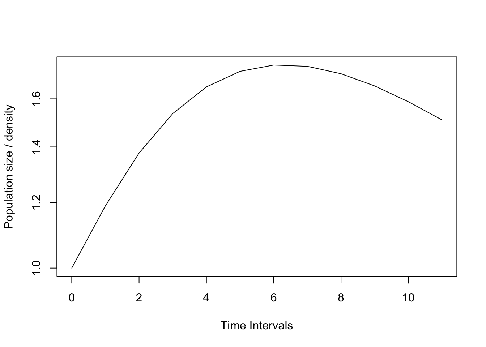
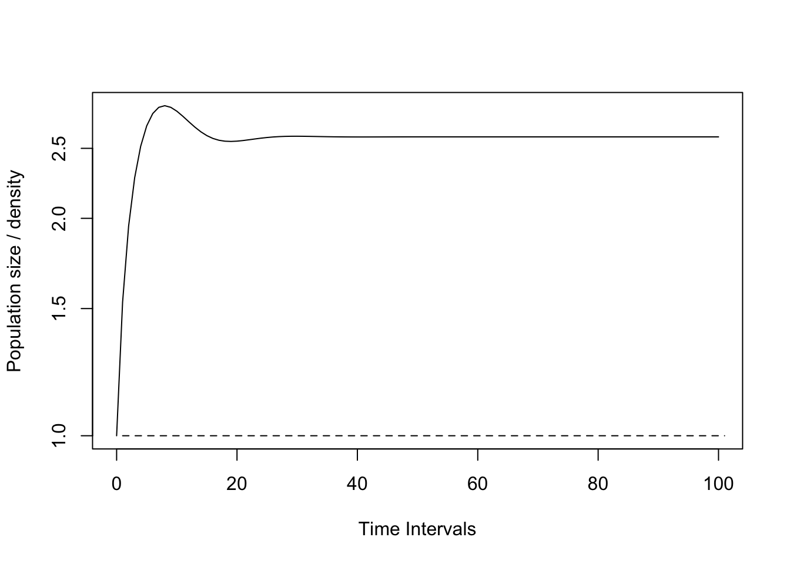
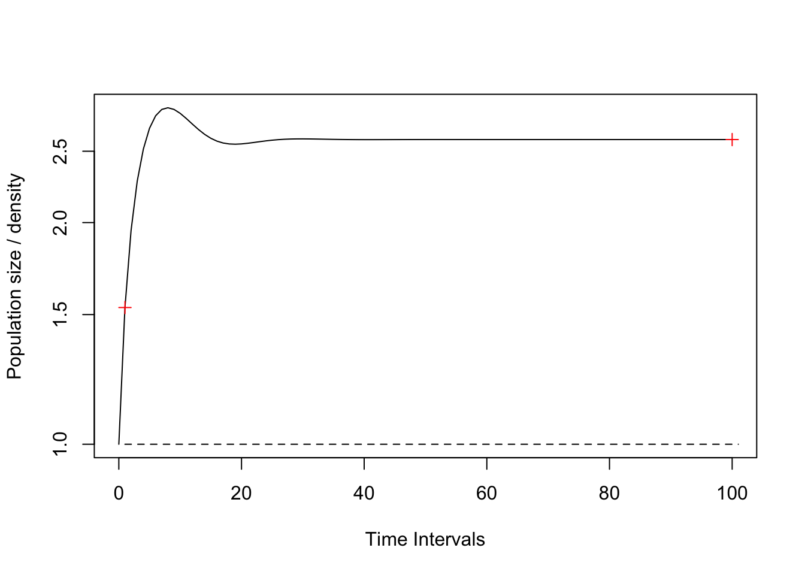
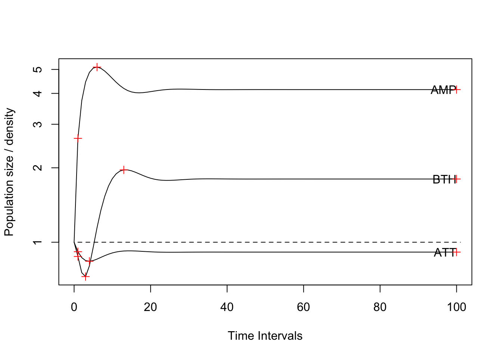
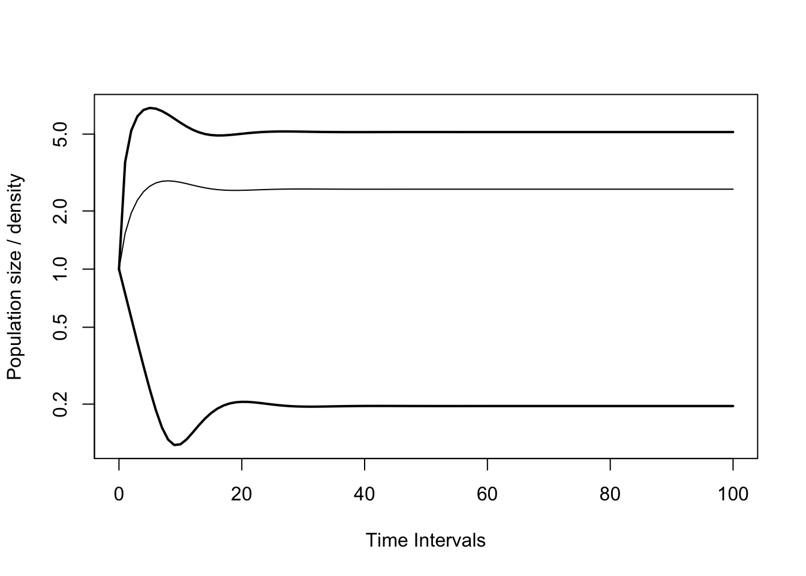
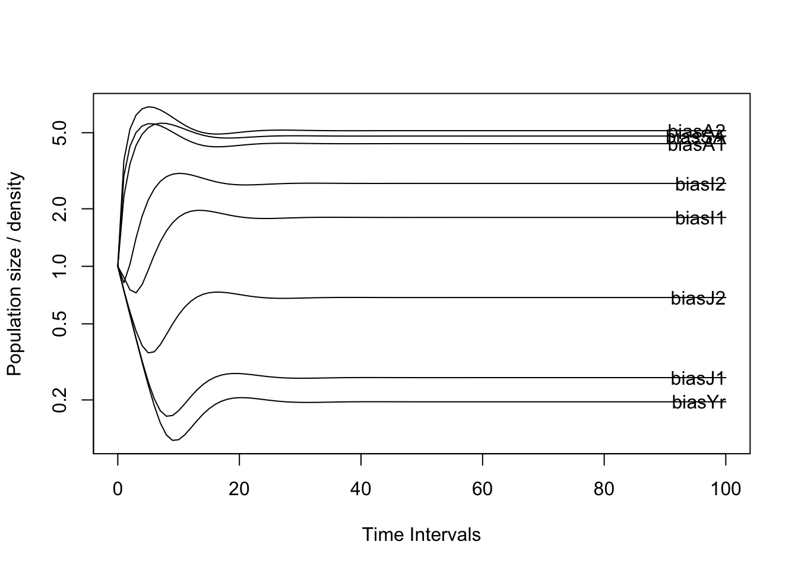
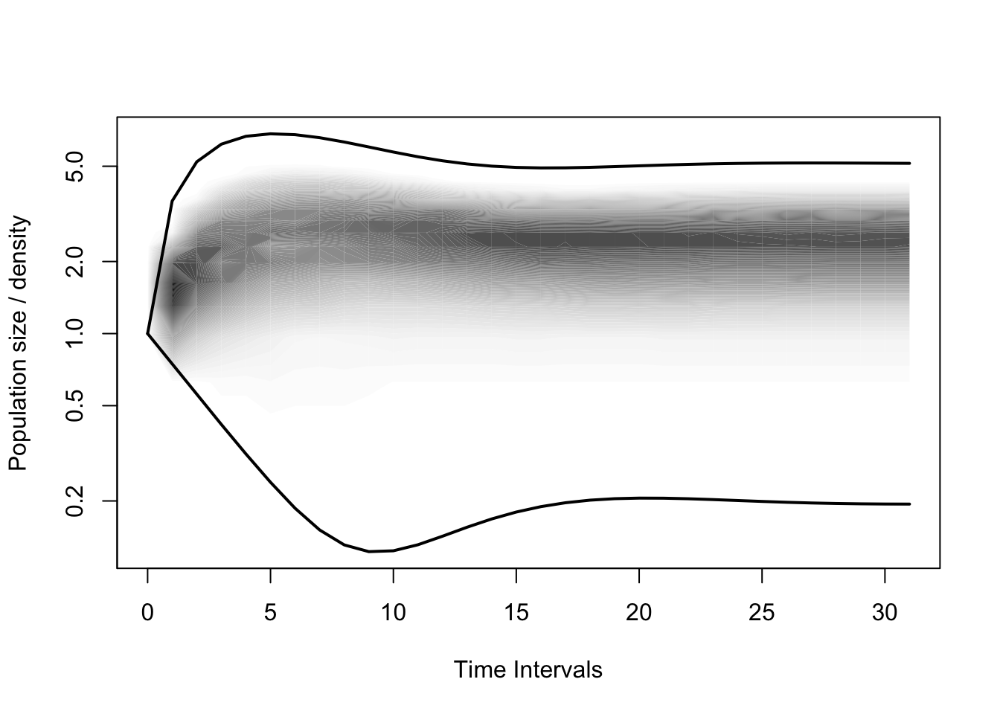

# Install dependencies from CRAN:
#install.packages(c("devtools", "expm", "MCMCpack", "markovchain"))
# Install stable version from GitHub (recommended):
# NOTE don't forget to change the version number!
# devtools::install_github("iainmstott/popdemo/x.x-x/popdemo") #x.x-x is the desired version number
library(popdemo)
# Install development version 'popdemoDev' (not recommended):
#devtools::install_github("iainmstott/popdemo/Dev/popdemoDev", ref = "development")
#library(popdemoDev)
library(popbio)data(Tort)
Tort## Yr J1 J2 I1 I2 SA A1 A2
## Yr 0.000 0.000 0.000 0.000 0.000 1.300 1.980 2.57
## J1 0.716 0.567 0.000 0.000 0.000 0.000 0.000 0.00
## J2 0.000 0.149 0.567 0.000 0.000 0.000 0.000 0.00
## I1 0.000 0.000 0.149 0.604 0.000 0.000 0.000 0.00
## I2 0.000 0.000 0.000 0.235 0.560 0.000 0.000 0.00
## SA 0.000 0.000 0.000 0.000 0.225 0.678 0.000 0.00
## A1 0.000 0.000 0.000 0.000 0.000 0.249 0.851 0.00
## A2 0.000 0.000 0.000 0.000 0.000 0.000 0.016 0.86That is, the population size at time t nt is equal to projection matrix A multiplied by the population size at time 0, n0. We have the matrix, but not a vector. We will: - choose a vector using a random uniform distribution - project this vector using the project function from popdemo - plot the projection
set.seed(1234)
Tortvec1 <- runif(8) # el 8 se refiere que hay 8 etapas
Tortvec1 <- Tortvec1/sum(Tortvec1) #scales the vector to sum to 1
( Tortp1.1 <- project(Tort, Tortvec1, time = 11) )## 1 deterministic population projection over 11 time intervals.
##
## [1] 1.000000 1.188791 1.376424 1.535872 1.653834 1.726967 1.757562 1.751277
## [9] 1.715554 1.658376 1.587329 1.508982plot(Tortp1.1, log = "y")
#nT=c(10000, 500, 300, .....)
stable.stage(Tort)## Yr J1 J2 I1 I2 SA A1
## 0.22166176 0.40584601 0.15463401 0.06507518 0.03841807 0.03086514 0.07178663
## A2
## 0.01171319vec(Tortp1.1)[1:11, ]## Yr J1 J2 I1 I2 SA
## [1,] 0.03063189 0.1676485 0.16413964 0.16793947 0.23193206 0.17250076
## [2,] 0.39032538 0.1169891 0.11804680 0.12589225 0.16934773 0.16914023
## [3,] 0.44781220 0.3458058 0.08436392 0.09362789 0.12441941 0.15278031
## [4,] 0.47907516 0.5167054 0.09935941 0.06912147 0.09167742 0.13157942
## [5,] 0.48944939 0.6359898 0.13332589 0.05655392 0.06758290 0.10983827
## [6,] 0.48396470 0.7110520 0.17035826 0.05402413 0.05113660 0.08967650
## [7,] 0.46701877 0.7496852 0.20253988 0.05801395 0.04133216 0.07230640
## [8,] 0.44267352 0.7594569 0.22654321 0.06521887 0.03677929 0.05832348
## [9,] 0.41447536 0.7475663 0.24160908 0.07314713 0.03592284 0.04781866
## [10,] 0.38525852 0.7206345 0.24837973 0.08018062 0.03730637 0.04050369
## [11,] 0.35706489 0.6844448 0.24820584 0.08543768 0.03973401 0.03585543
## A1 A2
## [1,] 0.002558173 0.06264950
## [2,] 0.045129694 0.05391950
## [3,] 0.080521286 0.04709284
## [4,] 0.106565912 0.04178819
## [5,] 0.123450866 0.03764290
## [6,] 0.132406415 0.03434810
## [7,] 0.135007307 0.03165787
## [8,] 0.132895512 0.02938589
## [9,] 0.127616626 0.02739819
## [10,] 0.120508594 0.02560431
## [11,] 0.112638232 0.02394784The time series of stage 2 sizes is:
Tort## Yr J1 J2 I1 I2 SA A1 A2
## Yr 0.000 0.000 0.000 0.000 0.000 1.300 1.980 2.57
## J1 0.716 0.567 0.000 0.000 0.000 0.000 0.000 0.00
## J2 0.000 0.149 0.567 0.000 0.000 0.000 0.000 0.00
## I1 0.000 0.000 0.149 0.604 0.000 0.000 0.000 0.00
## I2 0.000 0.000 0.000 0.235 0.560 0.000 0.000 0.00
## SA 0.000 0.000 0.000 0.000 0.225 0.678 0.000 0.00
## A1 0.000 0.000 0.000 0.000 0.000 0.249 0.851 0.00
## A2 0.000 0.000 0.000 0.000 0.000 0.000 0.016 0.86vec(Tortp1.1)[, 2]## [1] 0.1676485 0.1169891 0.3458058 0.5167054 0.6359898 0.7110520 0.7496852
## [8] 0.7594569 0.7475663 0.7206345 0.6844448 0.6437387Cuando se usa la función eigs con la opción “all” tenemos tres información
Tort## Yr J1 J2 I1 I2 SA A1 A2
## Yr 0.000 0.000 0.000 0.000 0.000 1.300 1.980 2.57
## J1 0.716 0.567 0.000 0.000 0.000 0.000 0.000 0.00
## J2 0.000 0.149 0.567 0.000 0.000 0.000 0.000 0.00
## I1 0.000 0.000 0.149 0.604 0.000 0.000 0.000 0.00
## I2 0.000 0.000 0.000 0.235 0.560 0.000 0.000 0.00
## SA 0.000 0.000 0.000 0.000 0.225 0.678 0.000 0.00
## A1 0.000 0.000 0.000 0.000 0.000 0.249 0.851 0.00
## A2 0.000 0.000 0.000 0.000 0.000 0.000 0.016 0.86eigs(Tort, "all")## $lambda
## [1] 0.9580592
##
## $ss
## [1] 0.22166176 0.40584601 0.15463401 0.06507518 0.03841807 0.03086514 0.07178663
## [8] 0.01171319
##
## $rv
## [1] 0.1954968 0.2615887 0.6865549 1.8019036 2.7148109 4.8029132 4.3813423
## [8] 5.1237087Tortw <- eigs(Tort, "ss")
Tortpw <- project(Tort, Tortw, time = 100)Tortp1.1s <- project(Tort, Tortvec1, time = 100,
standard.A = TRUE, standard.vec = TRUE)
Tortpws <- project(Tort, Tortw, time = 100,
standard.A = TRUE, standard.vec = TRUE)
plot(Tortp1.1s, log = "y")
lines(Tortpws, lty = 2)
( r1 <- reac(Tort, Tortvec1) )## [1] 1.240832## [1] 1.136
( i1 <- inertia(Tort, Tortvec1) )## [1] 2.255509## [1] 1.777
## Copiar el chunk ariba
Tortp1.1s <- project(Tort, Tortvec1, time = 100,
standard.A = TRUE, standard.vec = TRUE)
Tortpws <- project(Tort, Tortw, time = 100,
standard.A = TRUE, standard.vec = TRUE)
plot(Tortp1.1s, log = "y")
lines(Tortpws, lty = 2)
points(c(1, 100), c(r1, i1), pch = 3, col = "red")
TortAMP <- c(1, 1, 2, 3, 5, 8, 13, 21) #a population that amplifies
TortATT <- c(21, 13, 8, 5, 3, 2, 1, 1) #a population that attenuates
TortBTH <- c(0, 0, 0, 1, 0, 0, 0, 0) #a population that does both
Tortvec3 <- cbind(AMP = TortAMP,
ATT = TortATT,
BTH = TortBTH)
Tortp3.1 <- project(Tort, Tortvec3, time = 100,
standard.A = TRUE, standard.vec = TRUE)
plot(Tortp3.1, log = "y"); lines(Tortpws, lty = 2)
( r3 <- apply(Tortvec3, 2, reac, A = Tort) )## AMP ATT BTH
## 2.6319219 0.9152956 0.8757288## AMP ATT BTH
## 2.6319 0.9153 0.8757
( r3t <- rep(1, 3) )## [1] 1 1 1## [1] 1 1 1
( i3 <- apply(Tortvec3, 2, inertia, A = Tort) )## AMP ATT BTH
## 4.1442333 0.9122843 1.8019036## AMP ATT BTH
## 4.1442 0.9123 1.8019
( i3t <- rep(100, 3) )## [1] 100 100 100## [1] 100 100 100
( max3 <- apply(Tortvec3[,c(1,3)], 2, maxamp, A = Tort) )## AMP BTH
## 5.110659 1.962069## AMP BTH
## 5.111 1.962
( max3t <- apply(Tortvec3[,c(1,3)], 2, function(x){
maxamp(vector = x, A = Tort, return.t = TRUE)$t}) )## AMP BTH
## 6 13## AMP BTH
## 6 13
( min3 <- apply(Tortvec3[,c(2,3)], 2, maxatt, A = Tort) )## ATT BTH
## 0.8376878 0.7261496## ATT BTH
## 0.8377 0.7261
( min3t <- apply(Tortvec3[,c(2,3)], 2, function(x){
maxatt(vector = x, A = Tort, return.t = TRUE )$t}) )## ATT BTH
## 4 3## ATT BTH
## 4 3
points(c(r3t, i3t, max3t, min3t),
c(r3, i3, max3, min3),
pch = 3, col = "red")
plot(Tortp1.1s, log = "y", bounds = TRUE)
plot(project(Tort, standard.A = TRUE), log = "y")
Tortpd <- project(Tort, "diri", time = 31,
standard.A = TRUE)
## Warning in .recacheSubclasses(def@className, def, env): undefined subclass
## "numericVector" of class "Mnumeric"; definition not updated
plot(Tortpd, plottype = "shady", bounds = T, log = "y")